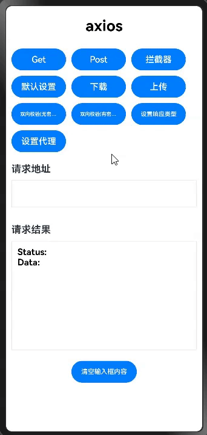
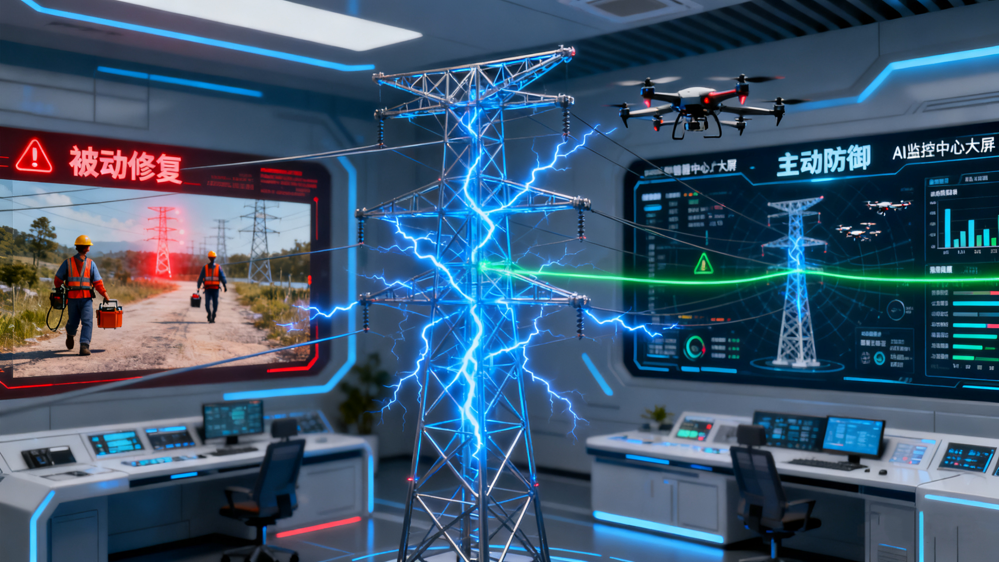
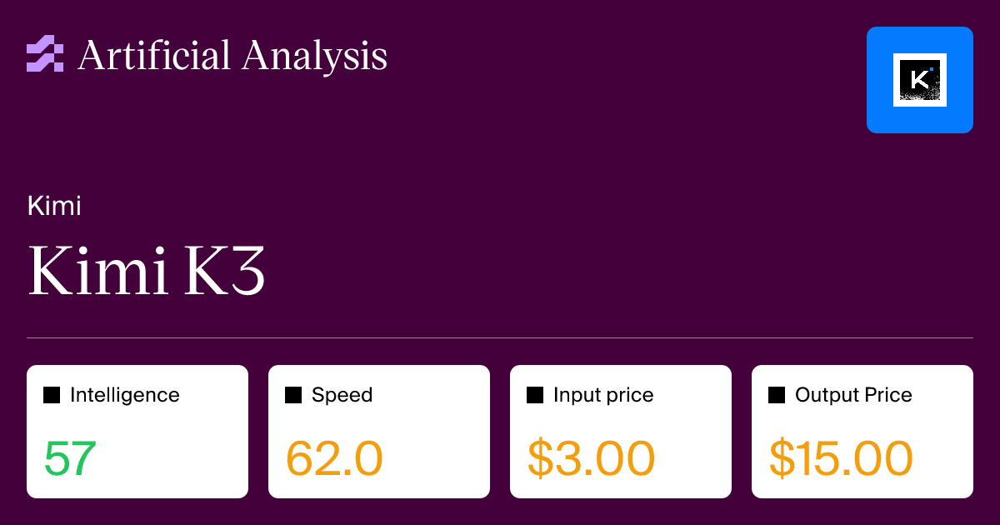
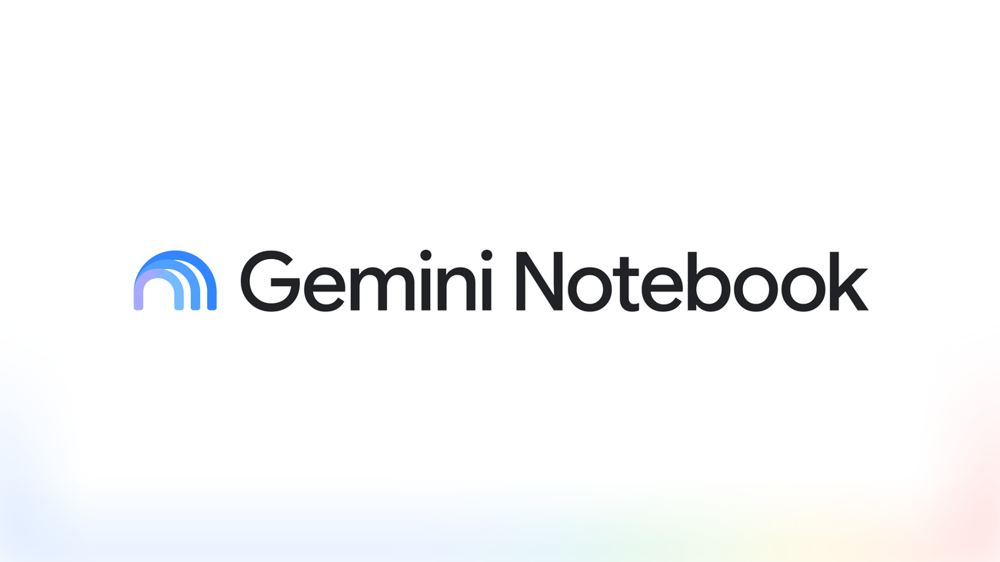
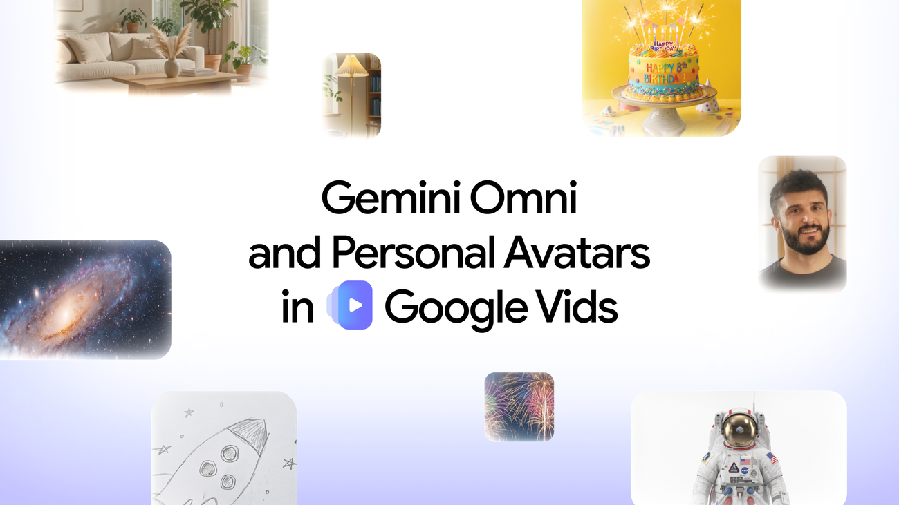
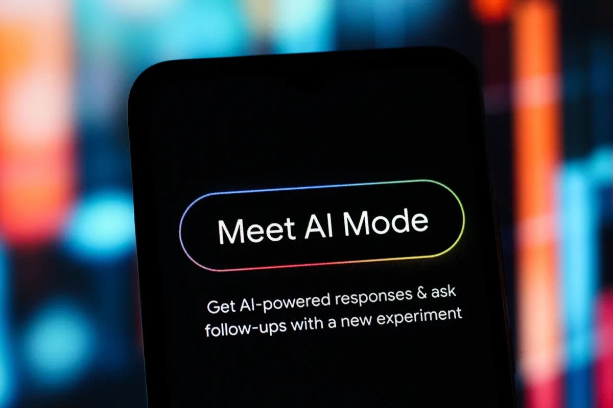
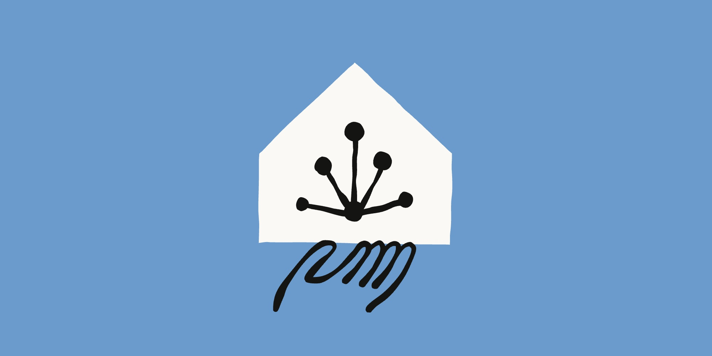
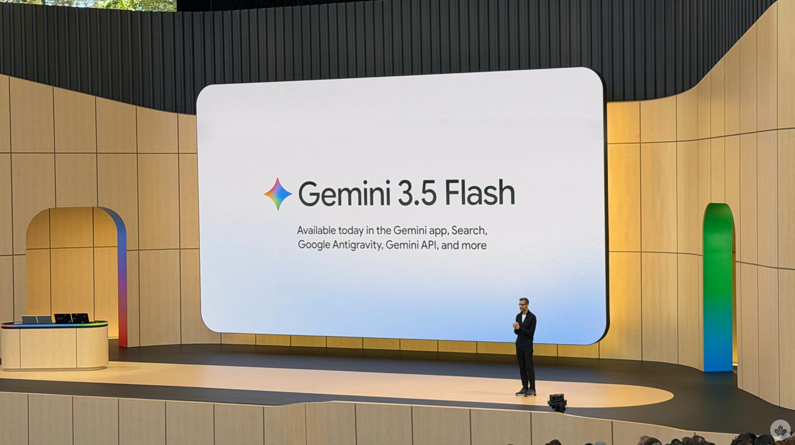
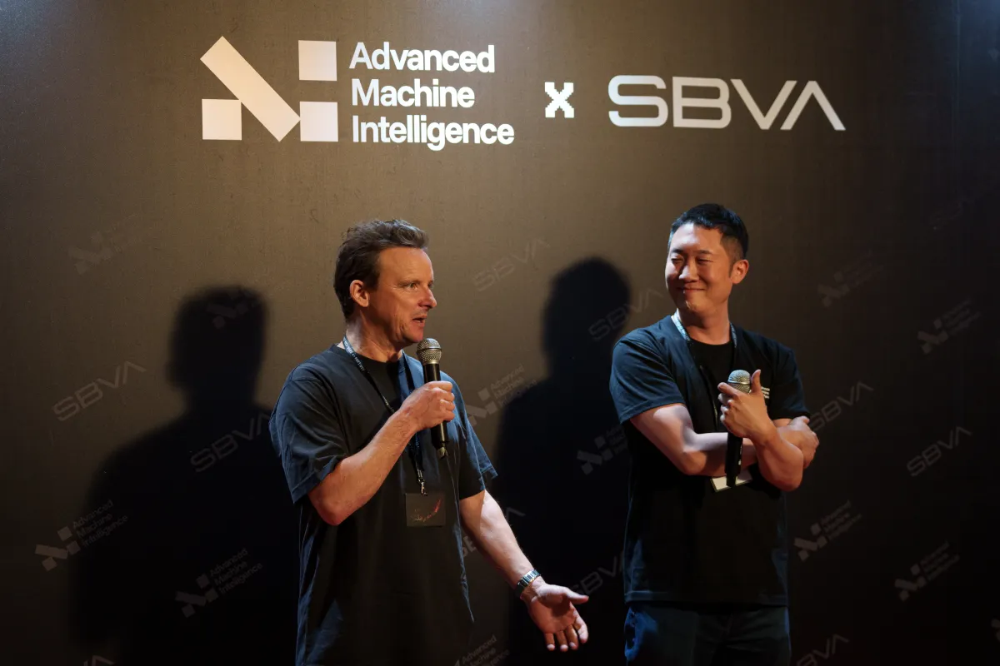
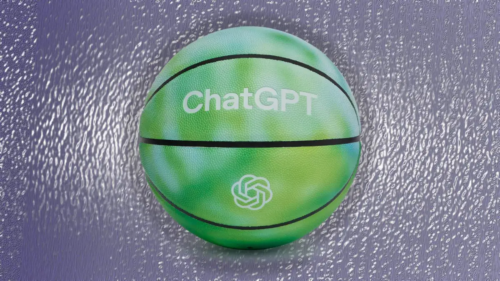

Janet 快车箱
AI Daily Briefing
2026-07-17
VOL 290
读者，早。
对中国创作者和企业来说，今天的信号很实用：下一个红利不在“又多聪明一点”，而在谁能把权限、成本、审核、素材、执行环境和结果验收做进工作流。只会调 prompt 的团队会被工具平台吃掉，能把 AI 变成稳定生产线的人才开始值钱。
接下来 2-4 周盯三件事：Kimi K3 这类超大模型的真实价格和吞吐，Google/Anthropic 的应用入口会不会变成默认工作台，以及数据中心反弹会不会把 AI capex 的故事从资本市场拖回电费账单。

OpenAI 7 月 16 日发布青少年 AI 安全说明，称近 9 成青少年 ChatGPT 用户每周会把它用于学习、信息、技能或生产力任务。OpenAI 还强调 Study Mode、年龄预测、家长控制、休息提醒、图像生成管理，以及在高风险场景下通知家长等机制。

TechCrunch 7 月 16 日报道，Meta 将在青少年与 Meta AI 聊到自杀或自伤时通知家长，并称正在研究在迫近风险场景联系紧急服务。Meta 表示已建立专门 AI 系统识别明确自伤表达，发送提醒前会人工复核；该功能先在美国、英国、澳大利亚和加拿大上线，年底前全球扩展。

Axios 7 月 16 日报道，Google DeepMind 的 Demis Hassabis、OpenAI 的 Sam Altman 和 Anthropic 的 Dario Amodei 都在近期书面支持对 frontier AI 做更紧急的监管。他们都主张独立测试、统一治理系统、美国主导和面向高风险前沿模型的准入规则，但对政府是否应当做最终裁判仍有分歧。

Axios 7 月 16 日报道，AI 数据中心需求继续推高美国最大电网 PJM 的备用电力成本，峰值容量价格达到每兆瓦日 325 美元的上限。PJM 服务约 6700 万人，拍卖成本总额达到 164 亿美元；独立市场监督机构估计其中约 63 亿美元与数据中心有关。
Business Insider 7 月 16 日报道，佛罗里达 Palm Beach County 委员会以 5 比 1 否决了 Mar-a-Lago 附近的 AI 数据中心扩建方案 Project Tango。开发商 PBA Holdings 计划把项目扩到约 360 万平方英尺，其中超过 100 万平方英尺为数据中心空间，并称项目完成后每年可带来 5.61 亿美元地产税收入，但居民担心水、电、噪音和学校周边安全。

Artificial Analysis 页面显示，Moonshot AI 的 Kimi K3 于 7 月 16 日发布，拥有 2.8 万亿参数、100 万 token 上下文，支持文本和图像输入，在 Intelligence Index 得分 57，输出速度为 62 token/s。其 API 价格为每 100 万输入 token 3 美元、输出 token 15 美元，缓存命中价格为 0.30 美元。

Anthropic 7 月 16 日发布 Claude Fable 5 在 Claude Cowork 中的使用指南，称 Fable 5 适合长时间、复杂、异步任务，例如深度研究后写备忘录、尽调后生成董事会材料，或批量红线审阅合同。Anthropic 也提醒 Fable 5 不是 Cowork 默认模型，默认仍是 Claude Sonnet 5；Fable 5 更适合重要、多工具、多判断的复杂任务。

Google 7 月 16 日宣布 NotebookLM 更名为 Gemini Notebook，仍保持独立产品定位，但会更深入接入 Gemini app 和 Google Search。Google 称该产品已有超过 3000 万用户和 60 万组织使用，并开始为 notebook 配置 secure cloud computer，让它能在资料基础上写代码和执行代码；该功能先面向 Google AI Ultra 和 Workspace business 客户。

Google 7 月 16 日宣布 Google Vids 增加 Gemini Omni 和 personal avatars。用户可以用文本提示和参考图生成或编辑视频，逐步修改背景、光线和特效，也可以上传自拍和录音创建自己的数字头像。Google 称 AI 生成视频会带有 SynthID 水印，个人头像限定部分地区、18 岁以上用户使用。

TechCrunch 7 月 16 日报道，Google AI Mode 现在允许用户连接并与部分应用交互，使其从回答问题扩展到跨应用完成任务。报道指出，这会让 Google 更直接对标支持应用集成的 ChatGPT 和 Claude，并可能把计划、购物等任务导入 Search 入口。

Anthropic 7 月 16 日发布 Claude Code 大规模代码迁移文章，描述用 rulebook、dependency map、gap inventory 和 skeptic reviewers 来组织迁移。文章称一个 Bun 迁移案例已经进生产，工具可检测的内存泄漏被修复，2000 次重复构建的内存占用从 6745 MB 降到 609 MB，Linux 和 Windows 二进制体积缩小 19%，HTTP serving、next build 和 tsc 等场景快 2%-5%。

Investor's Business Daily 7 月 16 日报道，Alphabet 股价周四下跌 4.4% 至 354.46 美元，市场担心 Gemini 3.5 Pro 发布进度落后。报道提到该模型原本在 Google I/O 上承诺 7 月发布，但因提升编码能力等原因延期；Google 预计 7 月 22 日发布 Q2 财报。

Times of India 7 月 16 日报道，Microsoft 在内部销售会议中要求团队强调 OpenAI 和 Anthropic 等竞争对手方案的限制，并把 Microsoft AI 平台包装成端到端、完整集成的选择。报道称执行副总裁 Jay Parikh 鼓励销售人员用这一叙事推动客户从点状工具转向 Microsoft 的一体化 AI 平台。

TechCrunch 7 月 16 日报道，Yann LeCun 离开 Meta 后联合创立的 AMI Labs 已在 3 月融资 10.3 亿美元，pre-money 估值 35 亿美元，但 Alexandre LeBrun 表示公司尚无产品，也不愿给出发布时间表，并避免使用 AGI 或 superintelligence 叙事。

Business Insider 7 月 16 日援引 Data Center Watch 数据称，2026 年第一季度至少 75 个、总值约 1300 亿美元的数据中心提案因地方反对而延迟或受阻。Palm Beach 的 Project Tango 被否，只是 AI 基建扩张遭遇地方阻力的最新案例。

TechCrunch 7 月 16 日报道，OpenAI 正销售一款 ChatGPT 篮球，售价 70 美元，约等于 5600 万个 GPT-5 输入 token。该篮球为 100% 橡胶材质，面向户外使用；报道也把它放在生成式 AI 能源和碳排争议背景下观察。
TechCrunch 7 月 16 日报道，Newsletter 平台 Beehiiv 推出 Community，让订阅者彼此聊天，同时发布 AI Copilot，帮助创作者理解内容、受众、订阅者和表现数据。Copilot 能分析 newsletter 和 podcast 表现、起草外联活动，并寻找新的变现机会；Beehiiv 还称其广告网络中的发布者每月收入超过 100 万美元。